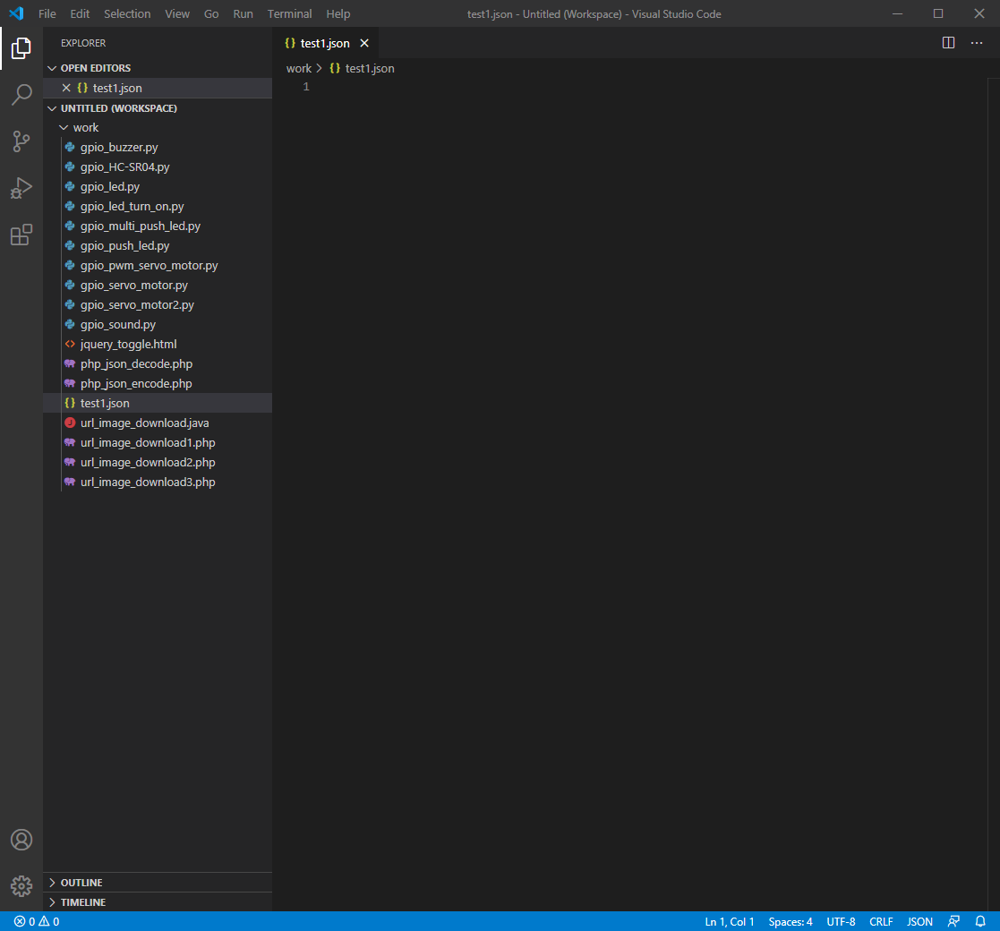
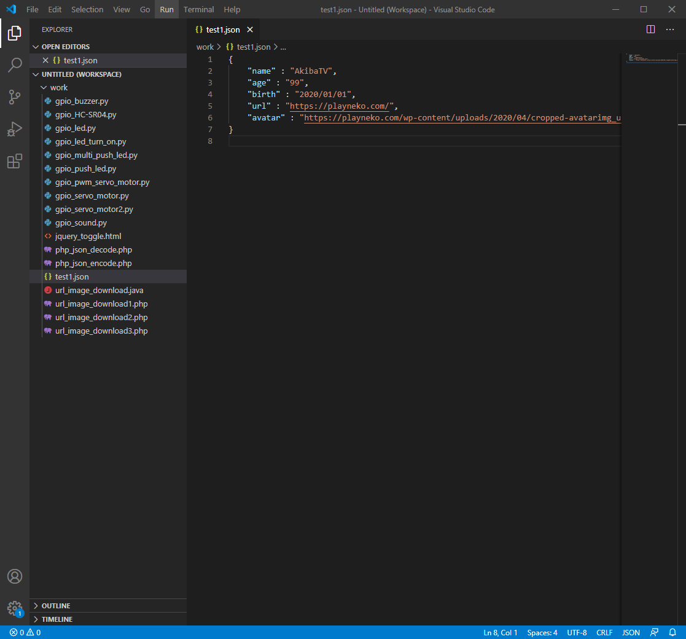
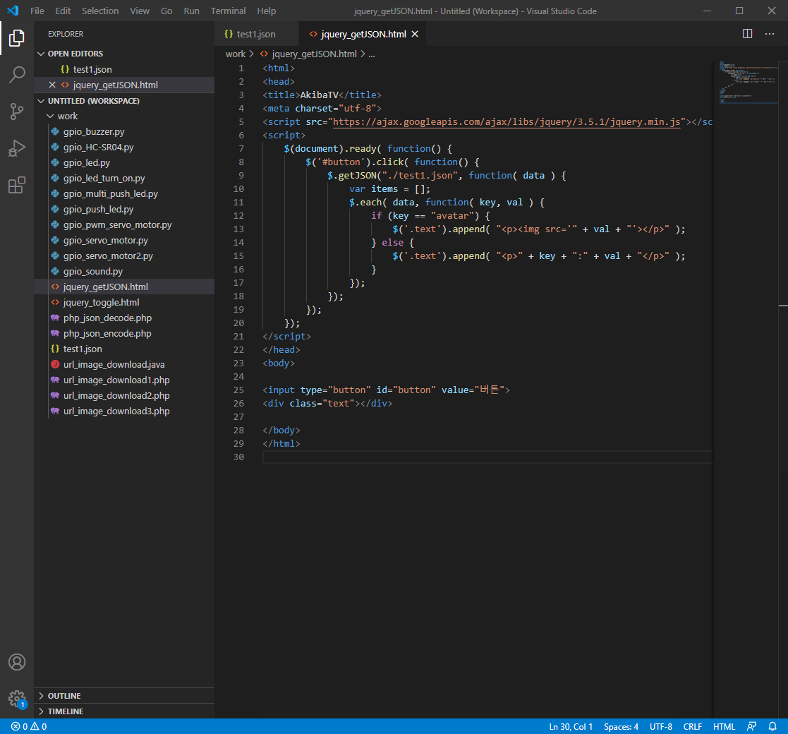
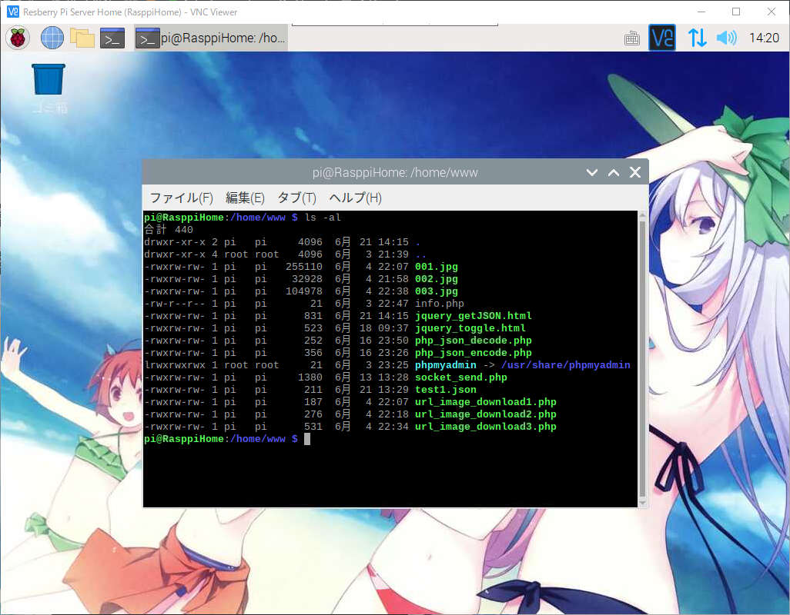
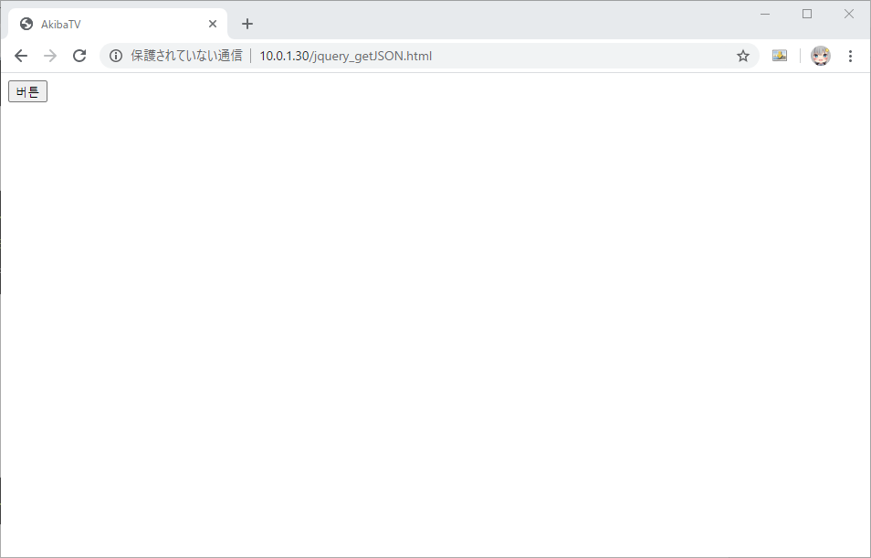
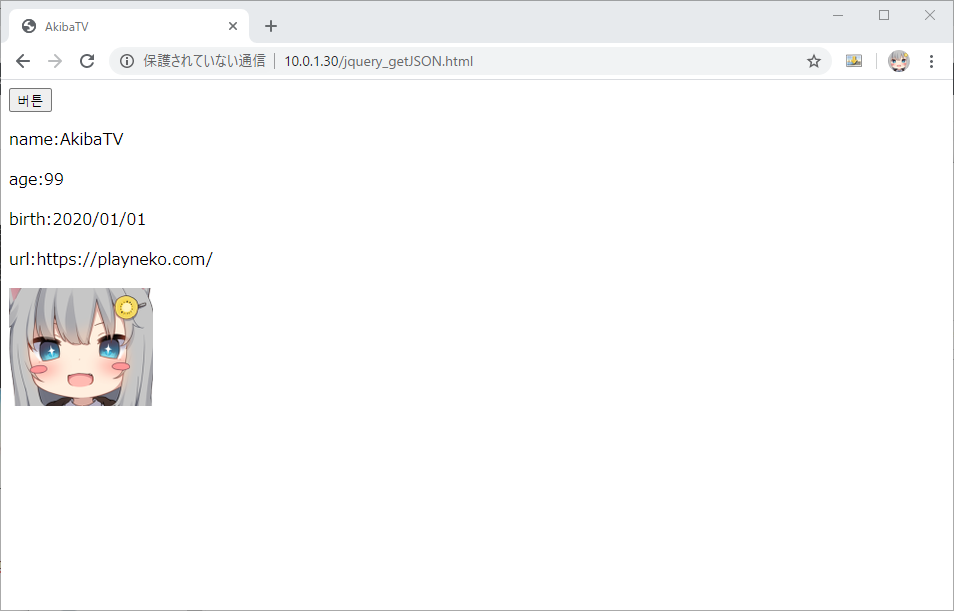

라즈베리파이 웹서버에서 jQuery.getJSON() 사용하기
라즈베리파이 웹서버에서 jQuery.getJSON() 사용하기
안녕하세요. AkibaTV 입니다.
이번에 소개할 내용은 라즈베리파이 웹서버에서 jQuery.getJSON() 사용하기 입니다.
JSON데이터를 서버에서 생성된 데이터나 다른 웹사이트에서 받아온 데이터를 웹에서 jQuery를
이용하여 어떻게 파싱처리를 해서 웹에 표시를 해주는지 대해서 해보도록 하겠습니다.
기본적인 처리에 대한것은 jQuery라이브러리 내부에서 처리를 해주기때문에 어렵지 않게
간단하게 구현이 가능 합니다.
.getJSON()이란
서버로 전송된 데이터는 쿼리 문자열로 URL에 추가됩니다.
data매개 변수의 값이 일반 객체인 경우 문자열로 변환되고 URL에 추가되기 전에 URL로 인코딩됩니다.
사용 문법
1 | jQuery.getJSON( url [, data ] [, success ] ) |
간단하게 JSON데이터를 만들고 만든 JSON데이터를 getJSON을 이용해
읽어들인 데이터를 화면에 출력하는것을 해보도록 하겠습니다.
그럼 우선 Visual Studio Code(비주얼 스튜디오 코드)를 실행해 주시기 바랍니다.
실행을 하셨으면 파일명을 test1.json로 추가를 해주시기 바랍니다.

아래의 코드를 작성해 주시기 바랍니다.
1 | { |

그럼 jQuery를 이용해서 소스코드를 작성을 해보도록 하겠습니다.
파일명은 jquery_getJSON.html로 추가를 해주시고 아래와 같이 코딩을 해주시기 바랍니다.
1 | <html> |

버튼을 누르면 화면에 JSON데이터를 파싱후 출력하는 처리를 만들어 보았습니다.
실제로 제대로 동작을 하는지 확인을 해보도록 하겠습니다.
작성을 하신 소스파일을 라즈베리파이 웹서버 또는 개인서버, 호스팅서버에 업로드를 해주시기 바랍니다.
저는 라즈베리파이에 웹서버를 구축을 해두었기때문에 라즈베리파이 웹서버를 이용하도록 하겠습니다.

서버에 파일이 올라간것을 확인이 되셨으면 웹브라우저를 실행해 주세요.
웹브라우저의 URL에 http://각웹서버URL/jquery_getJSON.html 를 실행해 주세요.

처음 접속해서 실행하시면 버튼하나만 표시되어 있는 상태 입니다.
버튼을 눌러주시면 아래와 같이 나오게 됩니다.

텍스트의 경우는 그대로 출력을 하게 했으며
이미지주소의 경우에는 이미지 태그를 이용해서 출력을 하도록 했습니다.